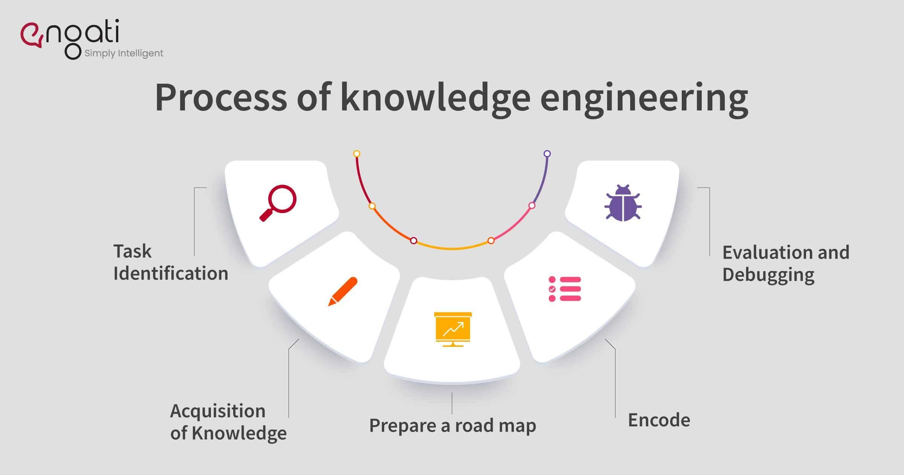

|
Logica si rezolvarea problemelor Ingineria cunoașterii Planificarea Învățarea automată Inteligența socială și informatica Creativitatea Inteligenta generala |
Ingineria cunoașterii Ingineria cunoașterii oferă sistemului IA informațiile necesare pentru a rezolva provocările și își finalizează logica și obiectivele de rezolvare a problemelor.Programatorii cer ca sistemul să aibă obiecte, proprietăți și categorii. De asemenea, este important ca acesta să înțeleagă și să reprezinte relațiile dintre obiecte. Scopul este, de asemenea, ca sistemul să recunoască timpul, stările și locurile, împreună cu indivizi și evenimente. Obiectivele de inginerie a cunoștințelor pot include, de asemenea, dezvoltarea înțelegerii cauzei și efectului în sistemul IA. |